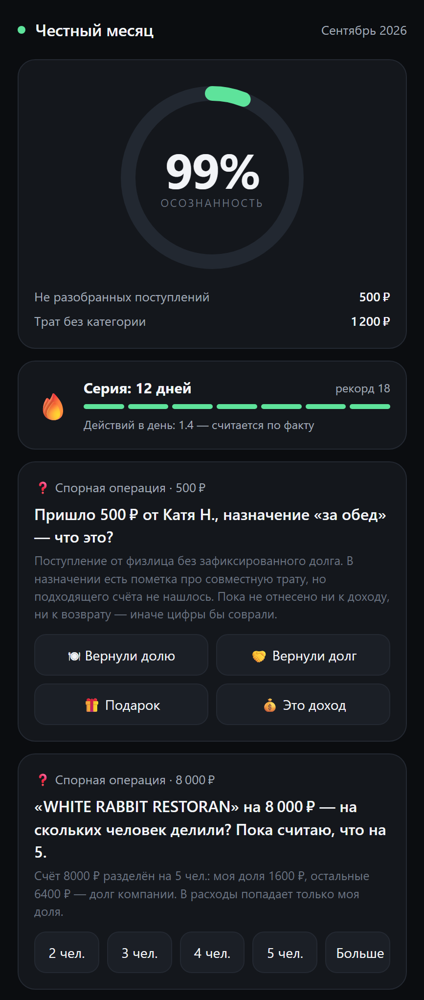
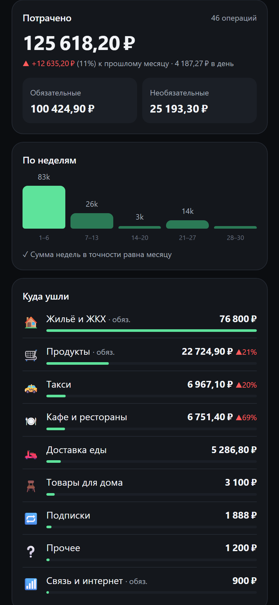
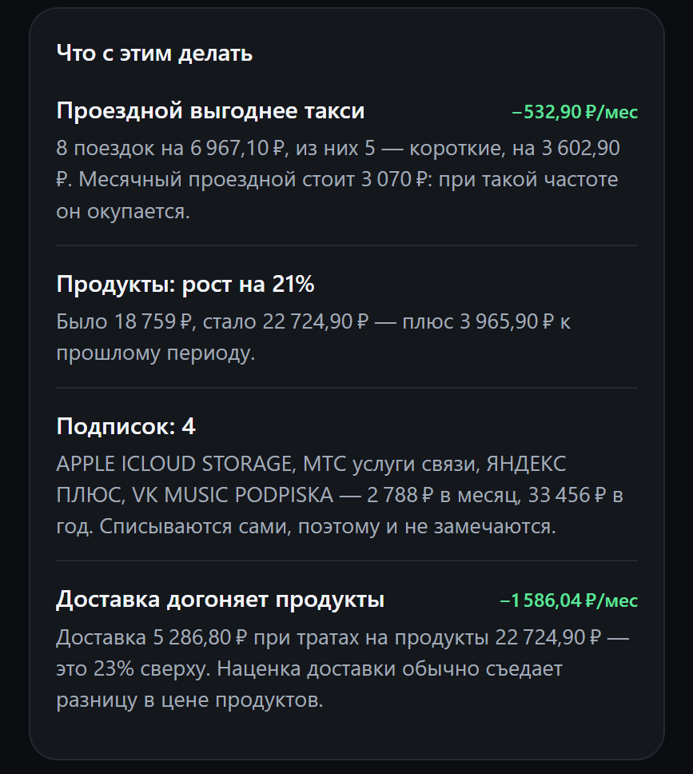

Считаем не сколько списалось со счёта,
а сколько вы потратили.
Требует действий каждый день. Пользоваться перестают быстро — и дело не в лени.
Вводить не надо ничего, но смысл операции подменяется знаком в выписке.
Денег хватает, поэтому каждую покупку никто не считает.
Такси, кофе, доставка. По одной штуке — ничто, за месяц — ощутимо.
К концу месяца. Вопрос не «сколько», а «на что».


Какая доля денег имеет установленный смысл. Не «сколько вы записали руками» — это была бы метрика дисциплины.
Рядом — измеренное число действий в день. Показываем ровно то, что посчитали, а не то, что хотелось бы.
Вопрос с готовыми вариантами и объяснением, почему он задан. Ответ сразу пересчитывает месяц.
Ручного занесения операций нет ни в одном пути. Импорт склеивает перевод из двух выписок в одну операцию сам.
Каждый тап, файл и голосовое пишутся в таблицу активности за день. /streak и главный экран показывают посчитанное среднее — «Действий в день: 1.4 — считается по факту».
Если завтра мы начнём спрашивать чаще, цифра вырастет у нас на глазах, а не останется красивой на слайде.
| Тип события | Что делает с расходами |
|---|---|
| Трата | + расход |
| Доход | доход, не расход |
| Перевод себе | 0 кроме комиссии |
| Пополнение кошелька | 0 расход при покупке |
| Снятие наличных | 0 это перемещение |
| Трата наличными | + расход |
| Дал в долг | 0 смена формы актива |
| Мне вернули долг | 0 |
| Тип события | Что делает с расходами |
|---|---|
| Занял | 0 это обязательство |
| Вернул долг | 0 |
| Счёт за компанию | + только моя доля |
| Вернули мою долю | 0 |
| Возврат товара | − расход |
| Корректировка | + расход невозврат, наличные |
| Смысл не установлен | 0, вопрос |
| Сценарий из кейса | Что показал бы обычный трекер | Что показываем мы |
|---|---|---|
| 1. Перевод 10 000 между своими картами | расход 10 000 и доход 10 000 | 0 и 0 — две записи склеены в одну операцию |
| 2. Пополнение карты Wildberries на 6 000, затем покупки с неё | расход 6 000 + траты без категории | 0 за пополнение, расход 5 400 с категориями «продукты» и «дом» |
| 3. Долг 3 000, возврат двумя частями по 1 500 через неделю | расход 3 000 и доход 3 000 | 0 по всем трём событиям — требование закрыто, остаток 0 |
| 4. Счёт 8 000 за пятерых, затем 4 поступления по 1 600 | расход 8 000, потом доход 6 400 | трата 1 600, дохода нет — 6 400 сразу дебиторка |
| 5. Пришло 500 «за обед», зафиксированного долга нет | доход 500 (или тихо угадано) | 0, висит на suspense — вопрос в 1 тап, 4 варианта |
| 6. Возврат товара, 4 200 пришли обратно на карту | доход 4 200 | −4 200 к «электронике» — датой возврата, прошлое не переписываем |
| 7. Снятие 5 000 в банкомате | расход 5 000 сразу | 0 при снятии. 2 000 стали тратой по голосовым, 3 000 — строкой «наличные не распределены» |
Операция — это не строка, а набор проводок. Счёт 8 000 за пятерых:
Пока сумма равна нулю, деньги не могут появиться и исчезнуть незаметно. Аналитика читает проводки, а не строки выписки.
Команда /checkup запускает те же четыре проверки прямо в боте — на защите это видно вживую, а не на слайде.
Срезы стыкуются встык: конец одного равен началу следующего, без дыр и нахлёстов.
Сумма не подгоняется. Она не может разойтись.
Просить вести учёт — ровно то, из-за чего люди бросают трекеры. Вместо этого приходит конкретный вопрос, на который отвечают одним тапом.
«Пришло 500 ₽ от Кати Н., назначение „за обед“ — что это?» Четыре готовых варианта и объяснение, почему система спрашивает. Ответ сразу пересчитывает месяц и запоминается на будущее.
Растёт от любого действия: тапа, файла, голосового. Рядом всегда стоит измеренное число действий — серия не требует ритуала.
Метрика качества данных, а не дисциплины — как Recovery у Whoop. Показывает, какая доля денег имеет установленный смысл; остальное — честно признанное незнание.
Зарплата в знаменатель не входит: 300 тысяч дохода разбавили бы любую неясность до неразличимости.
Есть спорные операции — приходит вопрос. Неделя отклонилась больше чем на четверть — приходит цифра. Нечего сказать — бот молчит.

Все числа считаются из проводок. Языковая модель только переписывает формулировку и не имеет права менять или выдумывать суммы.
8 поездок на 6 967,10 ₽, из них 5 коротких на 3 602,90 ₽. Месячный проездной стоит 3 070 ₽: при такой частоте он окупается.
iCloud, МТС, Яндекс Плюс, VK Music — 2 788 ₽ в месяц. Списываются сами, поэтому и не замечаются.
Доставка 5 286,80 ₽ при тратах на продукты 22 724,90 ₽. Наценка обычно съедает разницу в цене.
На эталонном скриншоте Т-Банка модель достаёт все восемь операций с датами и суммами, лишних не придумывает.
Модель выбрана замером, а не наугад: scripts/bench_vision.py гоняет 8 кандидатов через настоящий код разбора и сравнивает с эталоном — меряется весь путь, включая промпт.
Сейчас счёт за компанию считается на стороне одного человека. Дальше — общий счёт на двоих и больше: один платит, у остальных доля появляется автоматически.
Данных для этого уже хватает: регулярные списания найдены, обязательные траты отделены от необязательных, дневное среднее считается.
Уже работает: один платёж, присланный скриншотом и потом пришедший в выписке, засчитывается один раз, а ответ пользователя переезжает на точную запись. Дальше — межбанковские дубли и частичные совпадения.
Позиции из чека вместо одной суммы: видно не «магазин 3 400», а что именно в этих трёх тысячах четырёхстах.